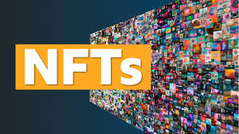
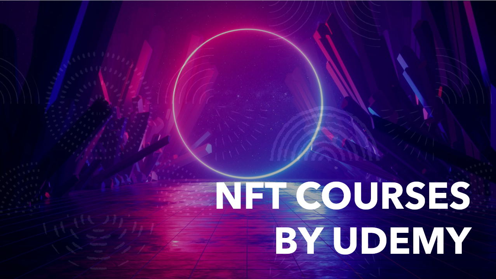
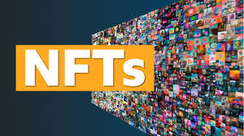
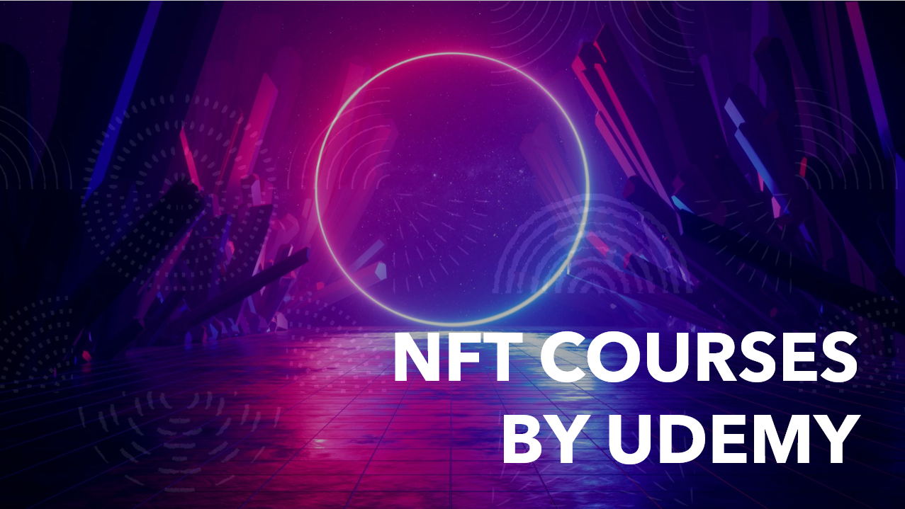
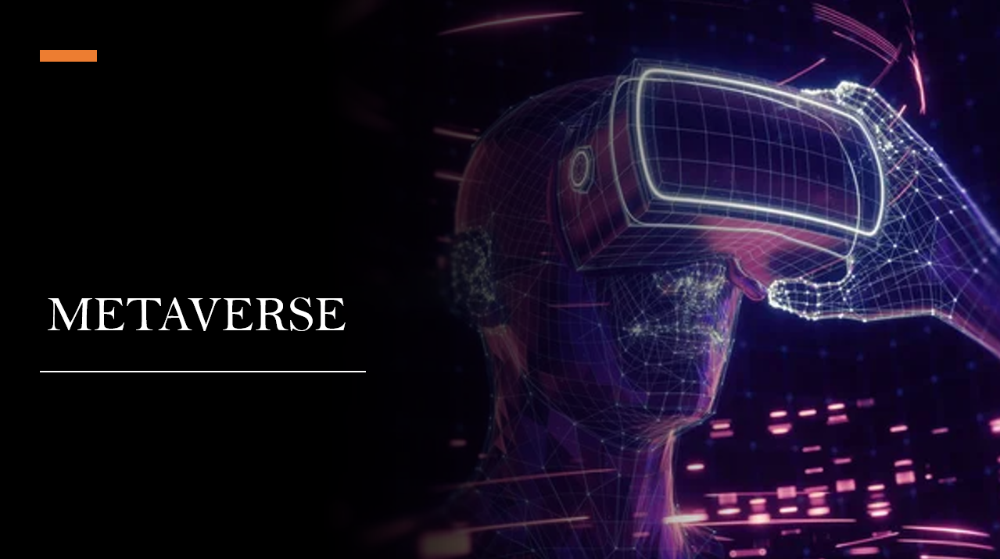
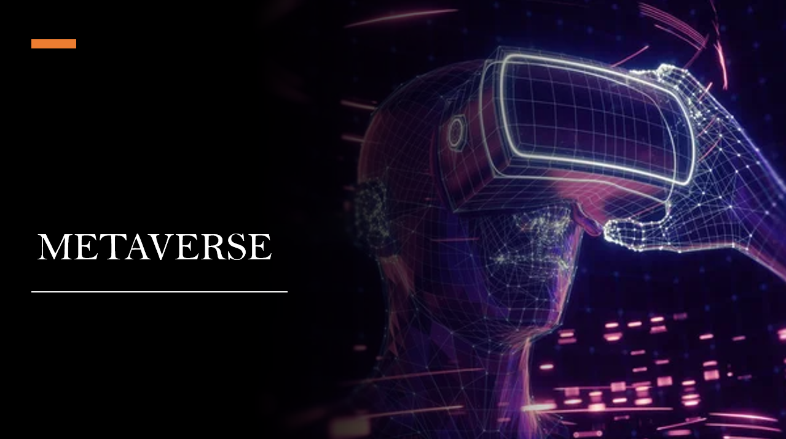
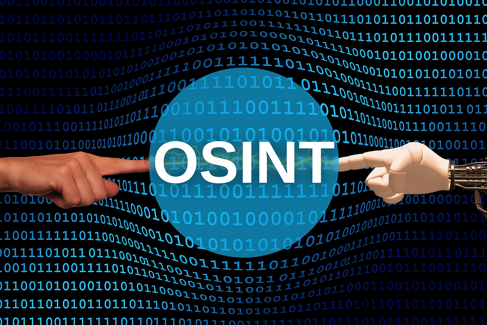

Courses related to DApps:

NFT
NFTs, or non-fungible tokens, are unique digital assets that are stored on a blockchain. Unlike cryptocurrencies, which are fungible and interchangeable, each NFT is one-of-a-kind and has its own distinct value. NFTs can represent anything from art and music to virtual real estate and sports collectibles.
Courses related to NFT:
 



Metaverse
The metaverse is a term used to describe a virtual world that is interconnected with the physical world, where users can interact with each other and digital objects in a fully immersive and interactive environment. It is essentially a shared virtual space that is accessed through a variety of devices, including virtual reality headsets, smartphones, and computers.
Courses related to Metaverse:
 

Smart Contract Security
Smart contracts are self-executing digital contracts that run on a blockchain. They can be used to automate a variety of processes, from financial transactions to supply chain management. While smart contracts have many potential benefits, they also pose significant security risks.
Courses related to Smart contract security:
Forensics
Forensics in blockchain involves the application of forensic investigation techniques to the blockchain technology and related digital assets. Blockchain forensics can be used to investigate a range of activities, including fraud, money laundering, and other illegal activities that involve cryptocurrencies or other blockchain-based assets.
Courses related to Forensics:
OSINT
OSINT, or open source intelligence, is the practice of collecting and analyzing information from publicly available sources, such as social media, news articles, and government reports. OSINT is used by a wide range of organizations, including government agencies, law enforcement, and private sector companies, for a variety of purposes, including threat intelligence, due diligence, and competitive intelligence.
Courses related to OSINT:
